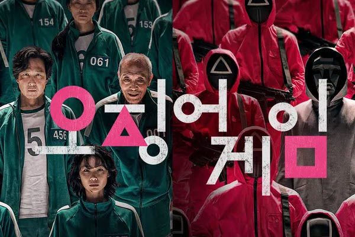

🎬 Category
K-Drama
Iconic scenes, emotional moments, and unforgettable lines from the best Korean dramas — each clip paired with cultural and language context.
📺 30 Featured Shorts

Iconic scenes, emotional moments, and unforgettable lines from the best Korean dramas — each clip paired with cultural and language context.